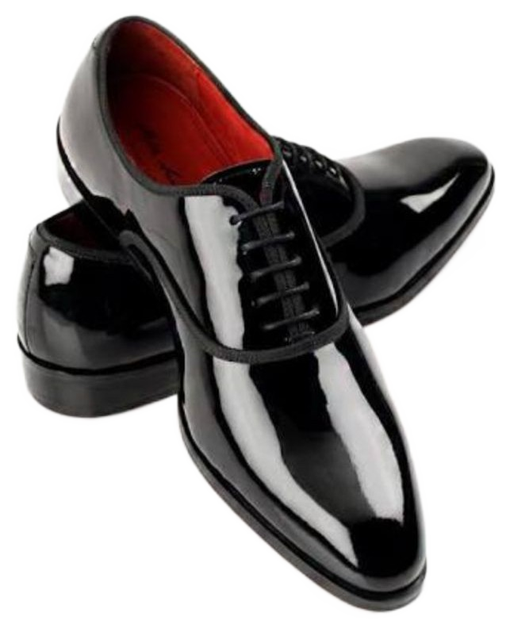

Find any shoe
in seconds, not shelves
Photograph a shoe and instantly get its matching catalog design, confidence score, and exact shelf location. No more manual searching through inventory — just point, shoot, and locate.
